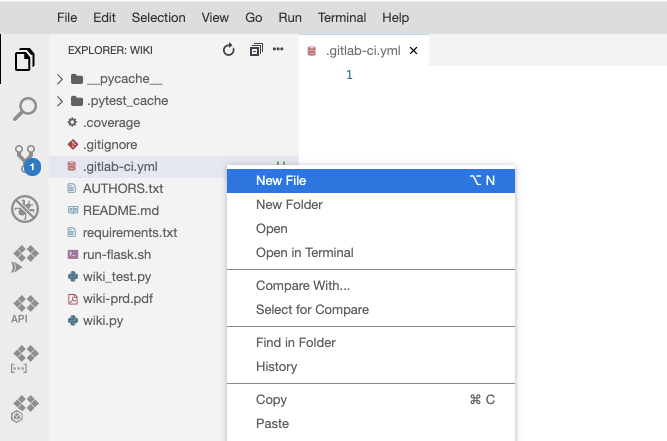
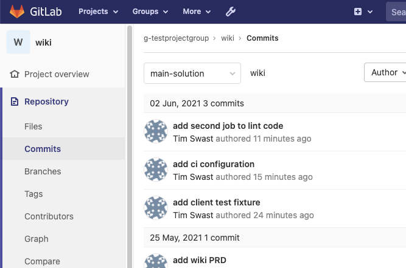
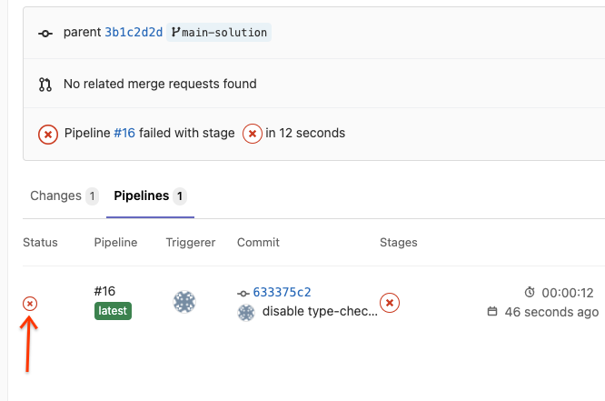
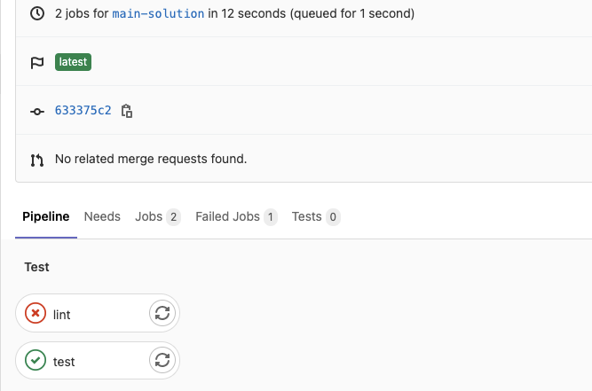
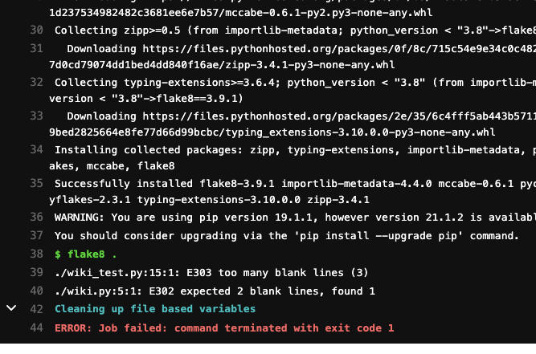

In this milestone, you'll setup continuous integration (CI) on your wiki repository and address issues that the tooling identifies.
This is expected to be completed as a group.
Configure GitLab Continuous Integration (CI) by creating the configuration file and pushing it to your main branch.
.gitlab-ci.yml (note the leading "." character).
image: python:3.7.3
Since you're using Python 3.7.3 with Cloud Shell, use that version to make sure your CI system matches your development environment.
test: script: - pip install -r requirements.txt - pytest .
lint: script: - pip install flake8==3.9.1 - flake8 .
.gitlab-ci.yml file looks like the following:image: python:3.7.3 lint: script: - pip install flake8==3.9.1 - flake8 . test: script: - pip install -r requirements.txt - pytest .


This should take you to an overview page for the continuous integration pipeline.


As you work on the requirements for this milestone, refer to these logs as you create additional jobs and address the issues each job finds.
To complete this milestone, you will need to create additional jobs and get these jobs to pass.
.gitlab-ci.yml file is present and the GitLab web interface shows what was described in the Getting Started section.pip install mypy==0.812
Remember to add mypy to your requirements.txt file!
@app.route("/view/<page_name>")
def view(page_name: str) -> str:
return render_template("main.html", page_name=page_name)
mypy .
.gitlab-ci.yml file.You might have noticed that some of your tests are failing when you looked at the logs in the Getting Started section. Some of these tests may indicate real bugs, in which case you should fix the bugs that they found. Some of the tests may need to be updated to match new requirements.
pip install pytest-cov==2.11.1
Remember to add pytest-cov to your requirements.txt file!
.gitlab-ci.yml configuration file to create a coverage report when the pytest command is run.Tip: Adjust this example from lecture to include a --cov=modulename argument for each module in your wiki project. Include test modules to ensure that all test code is being run.
pytest . --cov=wiki --cov=wiki_test --cov-report term-missing --cov-branch
Black is a community-standard code formatter for Python. This means that it automatically fixes many lint errors for you. It also provides a --check option to check if code has not been formatted.
pip install black==21.4b2
black .
Tip: The first time you run a code formatter is likely to cause many git conflicts. Check with your teammates first to ensure that they do not have any work-in-progress before formatting the code.
Add a .flake8 configuration file that overrides just the rules that conflict with black. You can use https://raw.githubusercontent.com/googleapis/python-bigquery/master/.flake8 for this purpose.
curl https://raw.githubusercontent.com/googleapis/python-bigquery/master/.flake8 > .flake8
.gitlab-ci.yml configuration file that runs black in --check mode.Do not complete this until flake8 is passing and black has been run.
It's common to forget to run the formatter when you are developing your code. Git provides a way to automatically run certain programs whenever you commit with what's called a "pre-commit" hook.
There is a Python program called pre-commit that can make managing these hooks easier.
pip install pre-commit==2.12.1
.pre-commit-config.yaml with configurations for "black", "flake8", and other useful helpers.repos:
- repo: https://github.com/pre-commit/pre-commit-hooks
rev: v3.4.0
hooks:
- id: trailing-whitespace
- id: end-of-file-fixer
- id: check-yaml
- repo: https://github.com/psf/black
rev: 21.4b2
hooks:
- id: black
- repo: https://gitlab.com/pycqa/flake8
rev: 3.9.1
hooks:
- id: flake8
pre-commit install
For the best outcome, all of your teammates should also complete this step after you've committed and pushed the .pre-commit-config.yaml file.
Remember: to receive a grade, you must submit a peer feedback form indicating which work you did and which was done by your teammates. Non-coding tasks such as help debugging also counts towards participation. This link will be generated and emailed to you after the due date.